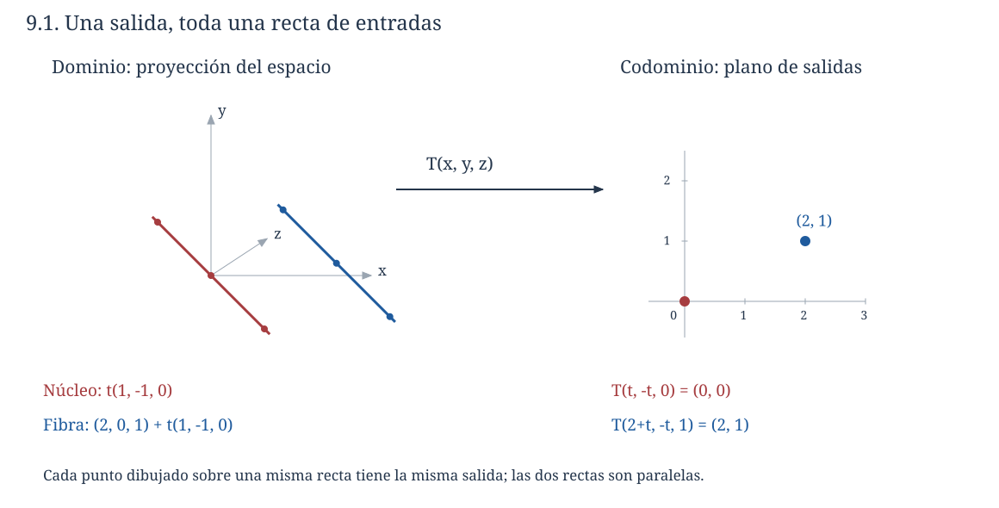
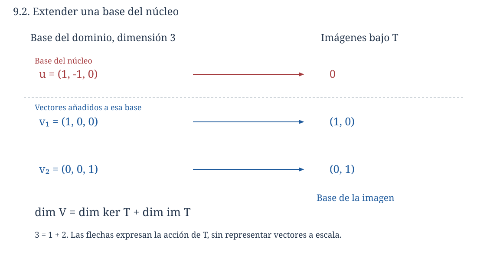
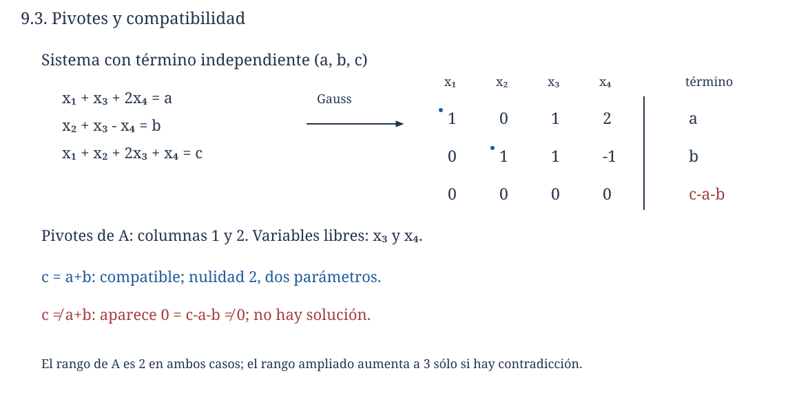

Capítulo 9. Núcleo, imagen y rango-nulidad
Álgebra para matemáticos · Tomo II
← Capítulo 8 · Índice del tomo II · Obra completa · Capítulo 10 →
Una medición registra la suma de dos cantidades y, por separado, una tercera. Su regla es \(T(x,y,z)=(x+y,z)\). Las entradas \((2,0,1)\) y \((0,2,1)\) dan la misma salida \((2,1)\), y podemos desplazarnos de una a otra sin cambiar lo observado: aumentar la primera cantidad y disminuir la segunda en la misma medida deja intactas ambas mediciones. Las entradas compatibles con esa salida forman toda la recta \((2,0,1)+t(1,-1,0)\).
La dirección \((1,-1,0)\) se reconoce porque su propia salida es cero. En cambio, cualquier par \((a,b)\) puede aparecer como resultado de la medición, ya que \(T(a,0,b)=(a,b)\). En esta transformación, una dirección de entrada queda oculta mientras dos direcciones de salida pueden variar libremente. La igualdad \(3=1+2\) sugiere un balance que debemos justificar para transformaciones entre espacios cualesquiera, incluidos los que están formados por polinomios, matrices o funciones.

Trabajaremos sobre un cuerpo \(\mathbb F\) común al dominio y al codominio. Los ejemplos numéricos son reales salvo indicación contraria. Se presuponen la eliminación de C01–C03, las bases de C07 y la linealidad de C08. Las afirmaciones sobre dimensiones enteras llevarán una hipótesis de finitud; las nociones de núcleo e imagen no la necesitan.
9.1. Qué se pierde y qué se alcanza
Definición 9.1 (núcleo e imagen). Para una transformación lineal \(T:V\to W\), su núcleo y su imagen son
\[ \ker T=\{x\in V:T(x)=0_W\}, \qquad \operatorname{im}T=\{T(x):x\in V\}. \]
El núcleo es un conjunto de entradas; la imagen es un conjunto de salidas. Aunque una matriz represente ambos cálculos, los dos objetos viven en espacios diferentes. En la transformación de la apertura, \(\ker T=\{(t,-t,0):t\in\mathbb R\}\) está en \(\mathbb R^3\), mientras que \(\operatorname{im}T=\mathbb R^2\) está en el codominio.
Proposición 9.1. El núcleo de \(T:V\to W\) es un subespacio de \(V\) y su imagen es un subespacio de \(W\).
Demostración. Como \(T(0_V)=0_W\), el núcleo contiene \(0_V\). Si \(x,y\in\ker T\) y \(a,b\in\mathbb F\), la linealidad da \(T(ax+by)=aT(x)+bT(y)=0_W\), así que el núcleo es cerrado por combinaciones lineales.
La imagen contiene \(0_W=T(0_V)\). Si \(u,v\) pertenecen a la imagen, existen entradas \(x,y\) con \(T(x)=u\), \(T(y)=v\). Para escalares \(a,b\), tenemos \(au+bv=T(ax+by)\), de modo que la combinación también pertenece a la imagen. Los criterios de subespacio de C05 completan ambas verificaciones. \(\square\)
Encontrar una imagen exige demostrar qué salidas se obtienen y que no falta ninguna de las que declaramos posibles. Por ejemplo, para \(S:\mathbb R^3\to\mathbb R^3\) definido por \(S(x,y,z)=(x+y,z,x+y+z)\), toda salida \((a,b,c)\) satisface \(c=a+b\). Recíprocamente, si se cumple esa ecuación, la entrada \((a,0,b)\) produce \((a,b,c)\). Por tanto, \(\operatorname{im}S\) es exactamente el plano \(c=a+b\), aunque el codominio sea todo \(\mathbb R^3\).
Una función es sobreyectiva si su imagen coincide con su codominio. La regla anterior no es sobreyectiva hacia \(\mathbb R^3\), pero sí lo es si elegimos como codominio el plano \(c=a+b\). El núcleo y las salidas alcanzadas permanecen iguales; cambia la afirmación de sobreyectividad porque ésta compara las salidas con el codominio declarado.
Proposición 9.2 (imágenes de generadores). Si una lista \((v_1,\ldots,v_r)\) genera \(V\), entonces \(\operatorname{im}T=\operatorname{span}(T(v_1),\ldots,T(v_r))\).
Demostración. Cada imagen \(T(v_j)\) pertenece a \(\operatorname{im}T\), que es subespacio, de modo que contiene todo el espacio generado por ellas. En sentido contrario, cualquier elemento de la imagen es \(T(x)\) y podemos escribir \(x=\sum_j a_jv_j\). La superposición de C08 da \(T(x)=\sum_j a_jT(v_j)\), que pertenece al espacio generado indicado. \(\square\)
Las imágenes de una base generan la imagen de la transformación, pero pueden dejar de ser independientes. Una proyección puede enviar uno de sus vectores a cero o dos vectores distintos a la misma salida. Para obtener una base de la imagen debemos extraerla de la lista de salidas, como en C07, o escoger con cuidado una base del dominio que tenga en cuenta el núcleo.
9.2. Reconocer la inyectividad mirando el cero
Una función es inyectiva cuando dos entradas con la misma salida necesariamente coinciden. Para una transformación lineal, la diferencia entre dos entradas con la misma salida pertenece al núcleo: \(T(x)=T(y)\) equivale a \(T(x-y)=0\). Esa observación convierte una comparación entre todas las parejas de entradas en una pregunta sobre las entradas que producen cero.
Teorema 9.3. Una transformación lineal \(T:V\to W\) es inyectiva si y sólo si \(\ker T=\{0_V\}\).
Demostración. Si \(T\) es inyectiva y \(x\in\ker T\), entonces \(T(x)=0_W=T(0_V)\) obliga a \(x=0_V\). La inclusión contraria ya se conoce, por lo que el núcleo es exactamente \(\{0_V\}\).
Supongamos ahora que el núcleo sólo contiene al cero. Si \(T(x)=T(y)\), la linealidad da \(T(x-y)=0_W\), así que \(x-y\in\ker T\) y, por la hipótesis, \(x-y=0_V\). En consecuencia, \(x=y\) y \(T\) es inyectiva. \(\square\)
La finitud de dimensión no intervino. Tampoco basta que el núcleo sea pequeño en un sentido informal: un solo vector no nulo del núcleo proporciona ya dos entradas distintas, ese vector y el cero, con una misma salida. Sobre un cuerpo finito, esas coincidencias siguen existiendo aunque las fibras sólo contengan un número finito de puntos.
Si \(T\) es inyectiva, envía cualquier lista independiente a una lista independiente. En efecto, una relación \(\sum_j a_jT(v_j)=0\) implica \(T(\sum_j a_jv_j)=0\); el núcleo trivial da \(\sum_j a_jv_j=0\) y la independencia de la lista original anula todos los coeficientes. El recíproco puede reconocerse en listas de un solo vector: si ningún vector no nulo puede enviarse a cero, el núcleo es trivial.
9.3. Rango y nulidad: construir las dos partes de una base
Definición 9.2. Cuando los subespacios correspondientes tienen dimensión finita, el rango de \(T\) es \(\operatorname{rg}T=\dim(\operatorname{im}T)\) y su nulidad es \(\operatorname{nul}T=\dim(\ker T)\).
Si \(V\) es de dimensión finita, su núcleo es finito por C07 y su imagen está generada por las imágenes de una base finita, por la proposición 9.2. En ese caso ambas cantidades están definidas, incluso si el codominio \(W\) tiene dimensión infinita.
Teorema 9.4 (rango-nulidad). Si \(T:V\to W\) es lineal y \(\dim V=n<\infty\), entonces
\[ \dim V=\operatorname{nul}T+\operatorname{rg}T. \]
Demostración. Comenzamos por una base \((u_1,\ldots,u_k)\) del núcleo y la extendemos hasta una base \((u_1,\ldots,u_k,v_1,\ldots,v_r)\) de \(V\). Tenemos \(n=k+r\). Los vectores del primer bloque desaparecen bajo \(T\); probaremos que las imágenes del segundo bloque forman una base de la imagen. Esa elección es lo que permitirá contar sin confundir generadores con vectores independientes.
Si \(x=\sum_i a_iu_i+\sum_j b_jv_j\), al aplicar \(T\) queda \(T(x)=\sum_j b_jT(v_j)\), porque \(T(u_i)=0\). Por tanto, las imágenes \(T(v_1),\ldots,T(v_r)\) generan \(\operatorname{im}T\).
Supongamos que satisfacen una relación \(\sum_j c_jT(v_j)=0\). La linealidad nos dice que \(z=\sum_j c_jv_j\) pertenece al núcleo. Como los \(u_i\) forman una base de ese núcleo, podemos escribir también \(z=\sum_i d_iu_i\). Al igualar las dos expresiones obtenemos
\[ \sum_{j=1}^r c_jv_j-\sum_{i=1}^k d_iu_i=0. \]
Ésta es una relación en la base completa del dominio. Su independencia anula todos los \(c_j\) y \(d_i\). Las imágenes del segundo bloque son, por tanto, independientes y forman una base de la imagen. Su dimensión es \(r\), mientras que la del núcleo es \(k\), de donde \(\operatorname{rg}T+\operatorname{nul}T=r+k=n\).
Si \(k=0\) o \(r=0\), el bloque correspondiente es vacío y los mismos argumentos valen con sumas vacías. Esto incluye al espacio nulo, a la transformación cero y a las transformaciones inyectivas. \(\square\)
Para la medición inicial, una base adaptada del dominio es \(((1,-1,0),(1,0,0),(0,0,1))\). El primer vector genera el núcleo; los dos restantes se envían a \((1,0)\) y \((0,1)\), que forman una base de la imagen. Hemos hecho explícita la descomposición \(3=1+2\) sin atribuir significado de dimensión a un simple conteo de ejemplos.

La derivación formal \(D:P_3(\mathbb R)\to P_3(\mathbb R)\) ofrece otro ejemplo. La condición \(D(a+bt+ct^2+dt^3)=b+2ct+3dt^2=0\) fuerza \(b=c=d=0\), de modo que el núcleo es el espacio de constantes, de dimensión uno. La imagen es \(P_2(\mathbb R)\): no se producen términos de grado tres y todo \(a+bt+ct^2\) se obtiene derivando \(at+(b/2)t^2+(c/3)t^3\). El rango es tres y \(4=1+3\). Las divisiones por dos y tres son válidas aquí sobre \(\mathbb R\); sobre otros cuerpos debemos volver a examinar los coeficientes.
9.4. Existencia y unicidad bajo restricciones de dimensión
El teorema permite reconocer obstáculos antes de calcular. Si \(V,W\) son finitos, la imagen es un subespacio de \(W\), de modo que \(\operatorname{rg}T\le\dim W\); rango-nulidad también da \(\operatorname{rg}T\le\dim V\). Si \(\dim V>\dim W\), resulta \(\operatorname{nul}T\ge\dim V-\dim W>0\), por lo que ninguna transformación lineal \(V\to W\) puede ser inyectiva. Si \(\dim V<\dim W\), ninguna puede ser sobreyectiva porque su imagen tiene dimensión demasiado pequeña.
Corolario 9.5. Para una transformación lineal entre dos espacios de la misma dimensión finita, son equivalentes: ser inyectiva, ser sobreyectiva y ser biyectiva.
Demostración. Escribamos \(\dim V=\dim W=n\). Si \(T\) es inyectiva, el núcleo tiene dimensión cero y rango-nulidad da \(\operatorname{rg}T=n\). La imagen es un subespacio de \(W\) con toda su dimensión, luego coincide con \(W\) por C07 y \(T\) es sobreyectiva. Si \(T\) es sobreyectiva, su rango es \(n\) y rango-nulidad da nulidad cero; el núcleo es entonces el subespacio nulo y el teorema 9.3 prueba inyectividad. La biyectividad reúne ambas propiedades. \(\square\)
La igualdad de dimensiones y su finitud son necesarias en esta conclusión. La inclusión \(J:\mathbb R^2\to\mathbb R^3\), \(J(x,y)=(x,y,0)\), es inyectiva sin ser sobreyectiva; la medición de la apertura es sobreyectiva sin ser inyectiva. En el espacio de todas las sucesiones, el desplazamiento a la derecha \(R(x_0,x_1,\ldots)=(0,x_0,x_1,\ldots)\) es inyectivo pero no alcanza una sucesión con primera entrada uno. El desplazamiento a la izquierda \(L(x_0,x_1,\ldots)=(x_1,x_2,\ldots)\) alcanza toda sucesión, pero pierde la primera entrada. Estos operadores de C08 actúan sobre un mismo espacio infinito y separan las dos propiedades.
Las mismas ideas aclaran los sistemas cuadrados de C03: para \(A\in M_n(\mathbb F)\), si \(Ax=0\) sólo admite la solución nula, entonces \(T_A\) es inyectiva y, por el corolario, cada sistema \(Ax=b\) tiene exactamente una solución. No basta esta afirmación para matrices rectangulares sin comparar sus dimensiones.
9.5. Todas las soluciones de una misma salida
Para \(w\in W\), la fibra de \(T\) sobre \(w\) es el conjunto \(T^{-1}(\{w\})=\{x\in V:T(x)=w\}\). La notación designa una preimagen de conjunto; no supone que \(T\) tenga función inversa.
Teorema 9.6 (fibras como traslaciones). La fibra sobre \(w\) es vacía si \(w\notin\operatorname{im}T\). Si \(T(p)=w\), entonces
\[ T^{-1}(\{w\})=p+\ker T=\{p+u:u\in\ker T\}. \]
Demostración. No pertenecer a la imagen significa precisamente que no existe una entrada con esa salida. Si existe \(p\) y \(T(x)=w=T(p)\), entonces \(T(x-p)=0\), por lo que \(x-p\in\ker T\) y \(x\in p+\ker T\). Recíprocamente, para \(u\in\ker T\) se tiene \(T(p+u)=T(p)+T(u)=w\), de modo que \(p+u\) pertenece a la fibra. Las dos inclusiones prueban la igualdad. \(\square\)
El punto particular \(p\) no es único si el núcleo es no trivial. Elegir otro punto \(p'\) de la misma fibra no cambia la traslación como conjunto, porque \(p'-p\in\ker T\). Todas las fibras no vacías tienen las mismas direcciones y la misma cantidad de parámetros independientes, dada en dimensión finita por \(\operatorname{nul}T\).
En la apertura, sobre \((a,b)\) podemos elegir \(p=(a,0,b)\) y obtener \((a+t,-t,b)\) para todas las soluciones. Para la transformación \(S(x,y,z)=(x+y,z,x+y+z)\) de §9.1, la salida \((a,b,c)\) tiene fibra vacía cuando \(c\ne a+b\) y, cuando es compatible, tiene la misma familia \((a+t,-t,b)\). El núcleo regula la unicidad; la imagen regula la existencia.
Si \(w\ne0\), una fibra no vacía no contiene el cero y no es un subespacio vectorial con las operaciones heredadas. Es un subespacio afín, una traslación del núcleo. Sobre un cuerpo finito de \(q\) elementos, si la nulidad es \(k\), cada fibra no vacía contiene exactamente \(q^k\) entradas: la traslación \(u\mapsto p+u\) es una correspondencia biyectiva con el núcleo. Esta afirmación sustituye a «hay infinitas soluciones» cuando el cuerpo es finito.
9.6. La misma dimensión en filas y columnas
Para \(A\in M_{m\times n}(\mathbb F)\), el producto \(Ax\) es la combinación de sus columnas con coeficientes dados por las entradas de \(x\). Por tanto, \(\operatorname{im}T_A\) es el espacio de columnas de \(A\) y \(\ker T_A\) es el espacio de soluciones de \(Ax=0\). Llamamos espacio de filas al subespacio de \(\mathbb F^n\) generado por las filas de \(A\). Su dimensión y la del espacio de columnas se llaman, respectivamente, rango por filas y rango por columnas.
Teorema 9.7. Los rangos por filas y por columnas de una matriz son iguales al número de pivotes de su forma escalonada reducida. Ese número es también \(\operatorname{rg}T_A\). En particular, \(\operatorname{rg}(A^{\mathsf T})=\operatorname{rg}A\).
Demostración. Sea \(R\) la forma reducida de \(A\) y sea \(r\) su número de pivotes. Cada operación elemental de fila sustituye filas por combinaciones de las anteriores; por ello el espacio de filas nuevo está contenido en el anterior. La operación inversa proporciona la inclusión contraria, así que el espacio de filas se conserva. Las \(r\) filas no nulas de \(R\) generan su espacio de filas y son independientes: en la columna de pivote correspondiente a cada una, una relación entre ellas se reduce al coeficiente de esa fila. El rango por filas de \(A\) es, por tanto, \(r\).
La proposición 7.6 de C07 prueba que las columnas originales de \(A\) situadas en las posiciones de pivote forman una base de su espacio de columnas. Luego el rango por columnas también es \(r\). Como ese espacio es \(\operatorname{im}T_A\), el rango de la transformación es el mismo. Finalmente, las columnas de \(A^{\mathsf T}\) son las filas de \(A\), de modo que el rango por columnas de \(A^{\mathsf T}\) coincide con el rango por filas de \(A\), y ambos son iguales a \(\operatorname{rg}A\). \(\square\)
Los dos espacios no son iguales como conjuntos: están en \(\mathbb F^m\) y \(\mathbb F^n\), respectivamente, y pueden tener incluso distinto número de entradas por vector. El teorema afirma igualdad de dimensiones. Tampoco afirma que las operaciones de fila conserven el espacio de columnas; conservan sus relaciones de dependencia y las posiciones que permiten seleccionar una base en las columnas originales.
Consideremos el sistema \(Ax=b\) con
\[ A=\begin{pmatrix}1&0&1&2\\0&1&1&-1\\1&1&2&1\end{pmatrix}, \qquad b=\begin{pmatrix}a\\b_0\\c\end{pmatrix}. \]
La tercera fila de coeficientes es suma de las dos primeras. Reducir la matriz ampliada produce la última ecuación \(0=c-a-b_0\), de modo que la imagen está formada por las columnas \((a,b_0,c)\) con \(c=a+b_0\). Las dos primeras columnas originales forman una base de la imagen, el rango es dos y la nulidad es \(4-2=2\). Tomando \(x_3=s\), \(x_4=t\), la solución general compatible es
\[ x=(a,b_0,0,0)+s(-1,-1,1,0)+t(-2,1,0,1). \]
La eliminación muestra los parámetros y rango-nulidad justifica su número. Con cuatro incógnitas y sólo dos condiciones independientes, una salida compatible no puede determinar una entrada única.

9.7. Restringir una transformación y componerla
Si \(U\subseteq V\) es un subespacio, la restricción \(T|_U:U\to W\) usa la misma regla de \(T\), pero sólo acepta entradas de \(U\). Sigue siendo lineal; su núcleo es \(U\cap\ker T\) y su imagen es \(T(U)\).
Proposición 9.8 (restricción y rango de una composición). Si \(U\) tiene dimensión finita, entonces
\[ \dim T(U)=\dim U-\dim(U\cap\ker T). \]
Si \(T:X\to V\) y \(S:V\to W\) tienen rangos finitos, se cumple \(\operatorname{rg}(ST)\le\min(\operatorname{rg}S,\operatorname{rg}T)\). Si además \(\dim V=m<\infty\), entonces
\[ \operatorname{rg}(ST)\ge\operatorname{rg}T+\operatorname{rg}S-m. \]
Demostración. La primera identidad es rango-nulidad aplicado a \(T|_U\), con el núcleo y la imagen que acabamos de identificar.
Para la composición, \(\operatorname{im}(ST)=S(\operatorname{im}T)\). Esta imagen está contenida en \(\operatorname{im}S\), lo que da una cota superior. Aplicar la primera identidad a la restricción de \(S\) al subespacio finito \(\operatorname{im}T\) da también
\[ \operatorname{rg}(ST) =\operatorname{rg}T-\dim(\operatorname{im}T\cap\ker S) \le\operatorname{rg}T. \]
Si \(V\) tiene dimensión \(m\), entonces \(\dim\ker S=m-\operatorname{rg}S\). La intersección no puede superar esa dimensión, de modo que la igualdad anterior da la cota inferior anunciada. \(\square\)
La pérdida adicional al aplicar \(S\) depende de qué parte de las salidas de \(T\) cae en el núcleo de \(S\). Si esa intersección es cero, la composición conserva todo el rango de \(T\), aunque \(S\) pueda anular direcciones que nunca se alcanzan desde \(T\). Si, en cambio, la imagen completa de \(T\) está dentro del núcleo de \(S\), la composición es cero.
9.8. Diseñar una transformación con núcleo e imagen dados
Los subespacios obtenidos al estudiar una transformación también pueden usarse como datos de un problema de construcción. No basta escoger un núcleo y una imagen de tamaños arbitrarios: rango-nulidad relaciona sus dimensiones.
Teorema 9.9 (construcción con datos estructurales). Sea \(V\) de dimensión finita, \(K\subseteq V\) un subespacio y \(I\subseteq W\) un subespacio finito. Existe una transformación lineal \(T:V\to W\) con \(\ker T=K\) e \(\operatorname{im}T=I\) si y sólo si \(\dim K+\dim I=\dim V\).
Demostración. La necesidad es rango-nulidad. Para probar suficiencia, tomamos una base \((u_1,\ldots,u_k)\) de \(K\) y la extendemos a una base \((u_1,\ldots,u_k,v_1,\ldots,v_r)\) de \(V\). La igualdad de dimensiones dice que \(r=\dim I\); elijamos una base \((w_1,\ldots,w_r)\) de \(I\). Por C08 existe una única transformación con \(T(u_i)=0\) y \(T(v_j)=w_j\) sobre esa base elegida.
Su imagen es \(I\), porque esas imágenes generan exactamente \(I\). Si \(x=\sum_i a_iu_i+\sum_j b_jv_j\) y \(T(x)=0\), entonces \(\sum_j b_jw_j=0\). La independencia de los \(w_j\) fuerza \(b_j=0\) para todo \(j\), por lo que \(x\in K\). La inclusión \(K\subseteq\ker T\) ya se deduce de los valores prescritos. Así, el núcleo es exactamente \(K\). La construcción admite bloques vacíos y funciona también para rango cero o núcleo trivial. \(\square\)
Por ejemplo, para construir \(T:\mathbb R^3\to\mathbb R^2\) con núcleo \(K=\operatorname{span}(1,1,0)\) e imagen toda \(\mathbb R^2\), completamos ese generador con \(e_2,e_3\). Les asignamos salidas \(0,(1,0),(0,1)\), respectivamente. Como \((x,y,z)=x(1,1,0)+(y-x)e_2+ze_3\), resulta \(T(x,y,z)=(y-x,z)\). Otras bases y otras asignaciones independientes pueden dar transformaciones diferentes con los mismos subespacios; el teorema garantiza existencia, sin afirmar una elección canónica.
9.9. Ejercicios
Los problemas comienzan con descripciones de núcleos, imágenes y fibras; después piden construir pruebas, detectar errores y diseñar transformaciones. Todos requieren justificación. Los espacios son reales salvo indicación contraria.
Calcular y representar
1. Para \(T:\mathbb R^3\to\mathbb R^2\), \(T(x,y,z)=(x+y,z)\), encuentre bases del núcleo y de la imagen, rango y nulidad. Describa la fibra sobre \((2,1)\) usando dos soluciones particulares distintas.
2. Para \(S(x,y,z)=(x+y,z,x+y+z)\), determine núcleo, imagen y fibras sobre \((1,2,3)\) y \((1,2,4)\). Distinga imagen y codominio.
3. Considere \(A=\begin{pmatrix}1&0&1&2\\0&1&1&-1\\1&1&2&1\end{pmatrix}\). Halle bases de sus espacios de filas y columnas y de las soluciones de \(Ax=0\). Resuelva \(Ax=(2,1,3)^{\mathsf T}\) y decida qué sucede con \(Ax=(2,1,4)^{\mathsf T}\).
4. Sea \(E:P_2(\mathbb R)\to\mathbb R^2\), \(E(p)=(p(0),p(1))\). Determine núcleo, imagen, rango, nulidad y todos los polinomios con \(E(p)=(2,5)\).
5. Para \(D:P_3(\mathbb R)\to P_3(\mathbb R)\), determine núcleo e imagen y resuelva \(Dp=2+6t\). Repita el cálculo de núcleo e imagen sobre \(\mathbb F_2\) y compare las dimensiones.
6. Sea \(P:\mathbb R^2\to\mathbb R^2\), \(P(x,y)=(x-2y,0)\). Calcule núcleo, imagen y todas las fibras. Explique geométricamente cuáles son vacías.
7. Para \(T_a(x,y,z)=(x+y,z,x+y+az)\), determine rango y nulidad según \(a\in\mathbb R\). ¿Hay algún valor para el cual sea inyectiva o sobreyectiva hacia \(\mathbb R^3\)?
8. Sea \(T_a:\mathbb R^2\to\mathbb R^2\), \(T_a(x,y)=(x+ay,ax+y)\). Determine para qué valores de \(a\) es biyectiva y describa núcleo e imagen en los valores excepcionales.
9. Calcule núcleo, imagen, rango y nulidad de la identidad y de la transformación cero \(V\to W\), con \(\dim V=n<\infty\). Incluya los casos \(V=\{0\}\) y \(W=\{0\}\) donde tengan sentido.
10. Sobre \(\mathbb F_2\), halle la cantidad de soluciones de \(x+y+z=1\) y enumérelas. Compare con el número de soluciones de la ecuación homogénea asociada.
Reconstruir y aplicar pruebas
11. Pruebe que \(T(x)=T(y)\) equivale a \(x-y\in\ker T\), y deduzca que dos fibras no vacías son iguales o disjuntas.
12. Si \(T:V\to W\) es lineal y \(U\subseteq V\), \(Y\subseteq W\) son subespacios, pruebe que \(T(U)\) y \(T^{-1}(Y)\) son subespacios. Distinga el segundo conjunto de una fibra sobre un vector no nulo.
13. Pruebe que una transformación lineal es inyectiva si y sólo si envía cada lista independiente a una lista independiente. No suponga dimensión finita.
14. En la prueba de rango-nulidad, explique por qué una relación entre las imágenes de los vectores añadidos produce un vector del núcleo y por qué la independencia de la base completa anula sus coeficientes. ¿Qué faltaría si sólo se demostrara generación de la imagen?
15. Si \(\dim V=5\) y \(\dim W=3\), determine los valores posibles del rango y de la nulidad de una transformación lineal \(V\to W\). Construya un ejemplo para cada rango posible.
16. Para \(T:V\to W\) con dimensiones finitas \(n,m\), pruebe que la existencia de una transformación inyectiva exige \(n\le m\) y la de una sobreyectiva exige \(n\ge m\). Pruebe también que esas condiciones son suficientes para construir alguna transformación del tipo pedido.
17. Pruebe que \(\ker T=V\) equivale a que \(T\) sea la transformación cero, y que también equivale a \(\operatorname{im}T=\{0\}\). ¿Se necesita finitud?
18. Un estudiante cuenta los pivotes de la matriz ampliada de un sistema incompatible como rango de la matriz de coeficientes. Dé un ejemplo mínimo que muestre el error y formule el criterio correcto de consistencia mediante imagen.
19. Si \(S:V\to W\) y \(T:U\to V\) son lineales, pruebe \(\ker T\subseteq\ker(ST)\) e \(\operatorname{im}(ST)\subseteq\operatorname{im}S\). Dé ejemplos donde ambas inclusiones sean estrictas.
20. Si \(\dim V=n\), pruebe que dos operadores sobre \(V\) con \(ST=I\) también satisfacen \(TS=I\). Identifique dónde se usa la dimensión finita.
Construir y contrastar
21. Construya \(T:\mathbb R^3\to\mathbb R^3\) con núcleo \(\operatorname{span}(1,1,0)\) e imagen \(\operatorname{span}(e_1,e_3)\). Verifique ambos espacios exactamente.
22. ¿Puede existir \(T:\mathbb R^4\to\mathbb R^3\) con núcleo de dimensión tres e imagen de dimensión dos? Si no, modifique sólo la dimensión del núcleo y construya un ejemplo que conserve la imagen \(\operatorname{span}(e_1,e_2)\).
23. Construya dos operadores distintos sobre \(\mathbb R^2\) con el mismo núcleo y la misma imagen. Compruebe que esos subespacios no determinan una transformación única.
24. Dé dos matrices con igual rango y distinto núcleo; después, dos con igual núcleo y distinta imagen. Justifique cada comparación.
25. Restrinja \(T(x,y,z)=(x+y,z)\) al subespacio \(U=\{z=0\}\). Determine \(U\cap\ker T\), \(T(U)\) y verifique la fórmula de restricción de la proposición 9.8.
26. Para los desplazamientos \(L,R\) de sucesiones de C08, calcule núcleos e imágenes. Explique por qué no se puede usar el corolario 9.5 y compruebe otra vez \(LR=I\), \(RL\ne I\).
27. Sea \(C:M_2(\mathbb R)\to M_2(\mathbb R)\) dado por \(C(A)=AB-BA\), donde \(B=\begin{pmatrix}1&0\\0&2\end{pmatrix}\). Encuentre bases de núcleo e imagen y verifique rango-nulidad.
28. Para la derivación formal en \(P_3(\mathbb F_3)\), determine núcleo e imagen. Compare con \(P_3(\mathbb R)\) y localice la condición que falla en afirmar que sólo se anulan las constantes.
29. Sea \(E:P_3(\mathbb R)\to\mathbb R^3\), \(E(p)=(p(0),p(1),p(2))\). Determine rango y nulidad; dé una base del núcleo y explique por qué toda terna es alcanzable sin resolver un sistema general desde cero.
30. Para \(T(x,y)=(x,0)\) y salida \(w=(1,0)\), un argumento llama «núcleo trasladado» a la fibra y concluye que es subespacio. Describa la fibra, refute esa conclusión y explique qué propiedad geométrica sí conserva.
Integrar y transferir
31. Sean \(T:X\to V\) y \(S:V\to W\) con rangos finitos. Pruebe que \(\operatorname{rg}(ST)=\operatorname{rg}T\) si y sólo si \(\operatorname{im}T\cap\ker S=\{0\}\). Interprete el resultado como inyectividad de una restricción.
32. Construya dos pares de operadores \(S,T\) sobre \(\mathbb R^3\) con \(\operatorname{rg}S=\operatorname{rg}T=2\), tales que \(\operatorname{rg}(ST)\) valga uno en el primer par y dos en el segundo. Compare con las dos cotas de la proposición 9.8.
33. Para \(T:V\to W\) con \(\dim V<\infty\) y un subespacio \(Y\subseteq\operatorname{im}T\), pruebe \(\dim T^{-1}(Y)=\dim\ker T+\dim Y\) sin usar espacios cociente.
34. Si \(A,B:V\to W\) son lineales de rango finito, pruebe \(\operatorname{rg}(A+B)\le\operatorname{rg}A+\operatorname{rg}B\). Dé un ejemplo de desigualdad estricta y explique por qué no se sigue una fórmula de igualdad por defecto.
35. Sea \(P:V\to V\) lineal, \(P^2=P\) y \(\dim V<\infty\). Pruebe que \(V=\ker P+\operatorname{im}P\) con intersección cero y determine núcleo, imagen y rango de \(I-P\).
36. Sea \(T:V\to V\) con \(\dim V=n\) y \(T^2=0\). Pruebe que \(\operatorname{im}T\subseteq\ker T\) y \(\operatorname{rg}T\le\lfloor n/2\rfloor\). Construya un ejemplo que alcance la cota para cada \(n\).
37. Si \(T:V\to W\) es lineal sobre \(\mathbb F_q\), con \(\dim V=n\) y rango \(r\), determine el número de salidas alcanzables y el de entradas que producen cada una. Deduzca un recuento completo de las entradas y trate las salidas no alcanzables.
38. Sea \(K\subseteq V\), \(\dim V=n\), \(\dim K=k\), y sea \(W\) de dimensión \(n-k\). Construya una transformación sobreyectiva con núcleo \(K\). Si \(K=\{0\}\), justifique además la unicidad de la preimagen de cada salida, sin afirmar unicidad de la transformación construida.
39. Sean \(T,S:V\to W\) con \(\ker T=\ker S\) y \(\operatorname{im}T=\operatorname{im}S=I\). Pruebe que la regla \(F(Tx)=Sx\) define una transformación lineal biyectiva \(F:I\to I\) y satisface \(S=FT\). No suponga que \(T\) es invertible ni use cocientes.
40. Un argumento afirma que rango-nulidad prueba «rango más nulidad igual a la dimensión del codominio». Refútelo con una transformación rectangular y reconstruya la igualdad correcta desde una base adaptada. Explique qué hipótesis adicional haría coincidir ambas dimensiones ambientales.
9.10. Soluciones razonadas
1. Para anular la salida se requiere \(x+y=0\) y \(z=0\), luego \(\ker T=\operatorname{span}(1,-1,0)\) tiene nulidad uno. Toda salida \((a,b)\) proviene de \((a,0,b)\), de modo que la imagen es \(\mathbb R^2\), con base usual y rango dos. Sobre \((2,1)\) podemos elegir \(p=(2,0,1)\) o \(p'=(0,2,1)\). Las parametrizaciones son \(p+t(1,-1,0)\) y \(p'+s(1,-1,0)\); coinciden al tomar \(s=t+2\). Ambas describen exactamente las entradas cuya suma de primeras dos coordenadas es dos y cuya tercera coordenada es uno.
2. Anular las primeras dos componentes exige \(x+y=0\), \(z=0\); la tercera queda automáticamente anulada. El núcleo tiene base \(((1,-1,0))\). Las salidas satisfacen \(c=a+b\) y toda terna con esa propiedad se obtiene desde \((a,0,b)\). Por tanto, la imagen tiene base \(((1,0,1),(0,1,1))\), rango dos y nulidad uno. La fibra de \((1,2,3)\) es \((1,0,2)+t(1,-1,0)\), mientras que la de \((1,2,4)\) es vacía. El codominio declarado sigue siendo \(\mathbb R^3\); la imagen sólo ocupa un plano dentro de él.
3. Al restar las dos primeras filas de la tercera obtenemos una fila cero, y las primeras dos ya tienen pivotes en las posiciones uno y dos. Una base del espacio de filas es \(((1,0,1,2),(0,1,1,-1))\); sus posiciones de pivote prueban independencia. Una base del espacio de columnas se toma en la matriz original: \(((1,0,1),(0,1,1))\). El homogéneo tiene base \(((-1,-1,1,0),(-2,1,0,1))\), pues sus coeficientes se leen en las entradas libres tercera y cuarta. Para \((2,1,3)^{\mathsf T}\) la condición de compatibilidad se cumple y todas las soluciones son \((2,1,0,0)+s(-1,-1,1,0)+t(-2,1,0,1)\). Para \((2,1,4)^{\mathsf T}\), la última ecuación reducida es \(0=1\) y no hay solución.
4. Si \(p=a+bt+ct^2\), entonces \(E(p)=(a,a+b+c)\). Su núcleo exige \(a=0\), \(b=-c\), luego tiene base \((t^2-t)\) y nulidad uno. Una salida \((u,v)\) se alcanza mediante \(p=u+(v-u)t\), por lo que la imagen es \(\mathbb R^2\) y el rango es dos. Para \((2,5)\) elegimos \(p_0=2+3t\); todas las soluciones son \(p=2+3t+c(t^2-t)\). La familia conserva los dos valores evaluados y añade exactamente los polinomios que se anulan en ambos puntos.
5. Sobre \(\mathbb R\), el núcleo son las constantes y la imagen es \(P_2(\mathbb R)\), de dimensiones uno y tres. Resolver \(Dp=2+6t\) da \(p=a+2t+3t^2\), con \(a\) libre. Sobre \(\mathbb F_2\), para \(p=a+bt+ct^2+dt^3\) se obtiene \(Dp=b+dt^2\) porque \(2=0\) y \(3=1\). Así, el núcleo tiene base \((1,t^2)\) y la imagen base \((1,t^2)\), aunque uno sea un subespacio de entradas y el otro de salidas. Rango y nulidad son dos; se verifica \(4=2+2\). La reducción de la ecuación real tiene salida cero, y sus soluciones binarias son justamente el núcleo.
6. La condición \(x-2y=0\) da \(\ker P=\operatorname{span}(2,1)\). La imagen es el eje horizontal, porque \(P(a,0)=(a,0)\) y toda salida tiene segunda componente cero. Ambos espacios tienen dimensión uno. Una salida \((a,b)\) tiene fibra vacía si \(b\ne0\); si \(b=0\), la fibra es \((a,0)+t(2,1)\). Son rectas paralelas al núcleo. La fibra del cero coincide con el núcleo y las demás rectas no pasan por el origen.
7. Las primeras dos componentes de la salida se anulan sólo si \(x+y=0\) y \(z=0\), independientemente de \(a\). Por ello el núcleo siempre es \(\operatorname{span}(1,-1,0)\) y la nulidad siempre vale uno. Las salidas tienen la forma \((u,v,u+av)\), generadas por \((1,0,1)\) y \((0,1,a)\); son independientes al mirar las primeras dos entradas. El rango vale dos para todo \(a\). Ningún valor da inyectividad ni sobreyectividad hacia \(\mathbb R^3\). El parámetro cambia el plano imagen, pero no su dimensión.
8. En el homogéneo, \(x=-ay\) y la segunda ecuación queda \((1-a^2)y=0\). Si \(a\ne\pm1\), el núcleo es trivial y el corolario 9.5 da biyectividad. También podemos resolver cualquier salida \((u,v)\) con \(y=(v-au)/(1-a^2)\) y \(x=(u-av)/(1-a^2)\), lo que verifica existencia y unicidad. Para \(a=1\), \(T_1(x,y)=(x+y,x+y)\), su núcleo tiene base \(((1,-1))\) y su imagen base \(((1,1))\). Para \(a=-1\), el núcleo tiene base \(((1,1))\) y la imagen base \(((1,-1))\). En ambos casos excepcionales rango y nulidad valen uno. El análisis por casos precede a la división por \(1-a^2\).
9. La identidad sobre \(V\) tiene núcleo \(\{0\}\) e imagen \(V\), por lo que su nulidad es cero y su rango \(n\). La transformación cero \(V\to W\) tiene núcleo \(V\) e imagen \(\{0_W\}\), de modo que su nulidad es \(n\) y su rango cero. Si \(V=\{0\}\), ambos números valen cero y la única transformación es inyectiva; es sobreyectiva sólo si también \(W=\{0\}\). Si el codominio es nulo y el dominio no, la función cero es sobreyectiva pero no inyectiva. La identidad sólo se considera con dominio y codominio iguales.
10. La aplicación \(T:\mathbb F_2^3\to\mathbb F_2\) dada por la suma de entradas es sobreyectiva, pues \(T(1,0,0)=1\). Su núcleo tiene dimensión dos por rango-nulidad y contiene \(000,110,101,011\). La fibra sobre uno contiene \(100,010,001,111\), cuatro soluciones. Es la traslación del núcleo por \(100\), por lo que tiene el mismo número de elementos. La existencia de variables libres no implica infinitud cuando el cuerpo sólo tiene dos elementos.
11. Por linealidad, \(T(x)=T(y)\) equivale a \(T(x-y)=0\), que es precisamente \(x-y\in\ker T\). Si dos fibras sobre \(u\) y \(v\) comparten un punto \(x\), su salida es a la vez \(u\) y \(v\), de modo que \(u=v\) y las fibras coinciden. Si sus salidas son distintas no comparten ningún punto. En términos de traslaciones, un punto común fuerza que la diferencia de los dos puntos particulares pertenezca al núcleo y, por tanto, que describan el mismo conjunto.
12. La imagen \(T(U)\) contiene cero. Si \(a=T(u)\), \(b=T(v)\) con \(u,v\in U\), cualquier combinación \(\alpha a+\beta b=T(\alpha u+\beta v)\) vuelve a pertenecer a \(T(U)\) porque \(U\) es subespacio. Para la preimagen, \(T(0)=0\in Y\), así que es no vacía; si \(x,z\) están en ella, \(T(\alpha x+\beta z)=\alpha T(x)+\beta T(z)\in Y\). Por eso \(T^{-1}(Y)\) es subespacio de \(V\). Una fibra sobre un vector no nulo es preimagen de un singleton que no contiene cero; si es no vacía, no contiene el cero del dominio y no es subespacio.
13. Si \(T\) es inyectiva y \(v_1,\ldots,v_r\) es independiente, una relación nula entre sus imágenes da \(T(\sum_j a_jv_j)=0=T(0)\). La inyectividad obliga a \(\sum_j a_jv_j=0\) y la independencia anula los coeficientes. Recíprocamente, para cualquier vector \(v\ne0\), la lista \((v)\) es independiente. Si todas esas listas conservan independencia, \(T(v)\ne0\). No hay, por tanto, elementos no nulos del núcleo y el teorema 9.3 da inyectividad. Los argumentos sólo usan relaciones finitas y no requieren una base del espacio.
14. Si \(\sum_j c_jT(v_j)=0\), la superposición permite reunir la suma como \(T(\sum_j c_jv_j)=0\). Así, \(\sum_j c_jv_j\) es un vector del núcleo y admite una expresión mediante su base \(u_i\). Al restar ambas expresiones aparece una relación en la base completa \((u_i,v_j)\), cuya independencia obliga a que todos los \(c_j\) sean cero. Probar sólo generación daría una lista de \(r\) generadores de la imagen y la cota \(\operatorname{rg}T\le r\); todavía podría contener redundancias, por lo que no justificaría la igualdad de dimensiones que exige rango-nulidad.
15. El rango puede ser \(r=0,1,2,3\); no puede superar la dimensión tres del codominio. Rango-nulidad obliga a nulidad \(5-r\), es decir, \(5,4,3,2\), respectivamente. Para construir ejemplos, fijamos bases \(v_1,\ldots,v_5\) y \(w_1,w_2,w_3\) y prescribimos \(T(v_j)=w_j\) para \(j\le r\), \(T(v_j)=0\) para \(j>r\). La imagen tiene base \((w_1,\ldots,w_r)\) y el núcleo base \((v_{r+1},\ldots,v_5)\) por independencia de las salidas no nulas. Esto realiza cada valor, incluido \(r=0\) mediante una lista vacía de imágenes básicas.
16. Si \(T\) es inyectiva, su nulidad es cero y su rango \(n\), que no puede superar \(m\). Si es sobreyectiva, el rango es \(m\) y no puede superar \(n\). Para suficiencia, elegimos bases. Cuando \(n\le m\), enviamos los \(n\) vectores básicos de \(V\) a los primeros \(n\) de una base de \(W\); la independencia de esas salidas hace trivial el núcleo. Cuando \(n\ge m\), enviamos los primeros \(m\) vectores de una base de \(V\) a toda la base de \(W\) y los restantes a cero. La imagen es todo \(W\). Las mismas construcciones con bases vacías tratan dimensiones cero.
17. Si el núcleo es \(V\), cada entrada se envía a cero, que es la definición de transformación cero. Si \(T\) es cero, su imagen sólo contiene cero y contiene ese valor. Si la imagen es \(\{0\}\), toda salida es cero y, por tanto, cada entrada pertenece al núcleo. Ninguna parte usa dimensión; basta interpretar los dos conjuntos y recordar que \(V\) contiene al menos el vector cero.
18. La ecuación \(0x=1\) tiene matriz de coeficientes \((0)\), de rango cero, y ampliada \((0\mid1)\), de rango uno. Su pivote está en la columna del término independiente y certifica una contradicción. La regla correcta es que \(Ax=b\) es consistente si y sólo si \(b\in\operatorname{im}T_A\), el espacio de columnas de \(A\). Equivalentemente, añadir \(b\) como columna no aumenta la dimensión del generado: \(\operatorname{rg}(A\mid b)=\operatorname{rg}A\). La igualdad de rangos se justifica por ese criterio de generación, no contando el pivote ampliado como si fuera de \(A\).
19. Si \(T(x)=0\), entonces \(S(T(x))=S(0)=0\), luego \(x\in\ker(ST)\). Toda salida \(S(T(x))\) es además una salida de \(S\), por lo que pertenece a su imagen. Para que ambas inclusiones sean estrictas en un mismo ejemplo, tome en \(\mathbb R^2\) \(T(x,y)=(x,0)\) y \(S(x,y)=(0,y)\). Entonces \(ST=0\). El núcleo de \(T\) es el eje vertical, estrictamente contenido en todo \(\mathbb R^2=\ker(ST)\), y \(\operatorname{im}(ST)=\{0\}\) está estrictamente contenido en el eje vertical \(\operatorname{im}S\).
20. De \(ST=I\) se deduce que \(T\) es inyectiva: si \(T(x)=T(y)\), aplicar \(S\) da \(x=y\). Como es un operador sobre un espacio de dimensión finita, el corolario 9.5 lo hace sobreyectivo. Dado cualquier \(v\in V\), elegimos \(x\) con \(v=T(x)\). Entonces \(TS(v)=TST(x)=T(x)=v\), y por ello \(TS=I\). La finitud se usó únicamente al pasar de inyectividad a sobreyectividad de \(T\). Los desplazamientos de sucesiones muestran por qué ese paso no es válido en general.
21. Definimos \(T(x,y,z)=(y-x,0,z)\). Su núcleo exige \(y=x\), \(z=0\), de modo que es exactamente \(\operatorname{span}(1,1,0)\). Toda salida tiene segunda entrada cero y cualquier \((a,0,b)\) se obtiene desde \((0,a,b)\), así que la imagen es exactamente \(\operatorname{span}(e_1,e_3)\). No basta comprobar que los generadores del núcleo se anulan y que dos salidas se alcanzan: las dos verificaciones anteriores prueban también que no hay más vectores en el núcleo ni salidas fuera del subespacio pedido.
22. Las dimensiones propuestas sumarían \(3+2=5\), que no es la dimensión cuatro del dominio. Por rango-nulidad es imposible. Para mantener rango dos debemos cambiar la nulidad a dos. La regla \(T(x_1,x_2,x_3,x_4)=(x_1,x_2,0)\) tiene núcleo \(\operatorname{span}(e_3,e_4)\) en el dominio e imagen \(\operatorname{span}(e_1,e_2)\) en el codominio. Así realiza exactamente las nuevas dimensiones y la imagen requerida.
23. Tome \(T(x,y)=(x,0)\) y \(S(x,y)=(2x,0)\). En ambas, el núcleo es el eje vertical y la imagen es el eje horizontal, porque el factor dos no se anula sobre \(\mathbb R\). Son operadores diferentes, pues \(T(1,0)=(1,0)\) y \(S(1,0)=(2,0)\). Los subespacios registran qué se anula y qué se alcanza, pero no determinan cómo cada entrada concreta recorre las salidas.
24. Las matrices fila \((1\ 0)\) y \((0\ 1)\) tienen rango uno, pero sus núcleos son el eje vertical y el horizontal, respectivamente. Para conservar el núcleo y cambiar la imagen, tomamos \(A=\begin{pmatrix}1&0\\0&0\end{pmatrix}\) y \(B=\begin{pmatrix}0&0\\1&0\end{pmatrix}\). Ambas se anulan exactamente cuando la primera entrada es cero; sus imágenes son los ejes horizontal y vertical, distintos. En los dos ejemplos la igualdad de un invariante no obliga a igualdad de los subespacios restantes.
25. El subespacio \(U\) es el plano horizontal \(z=0\), de dimensión dos. Como el núcleo de \(T\) ya es \(\operatorname{span}(1,-1,0)\), su intersección con \(U\) tiene dimensión uno. Las salidas de entradas en \(U\) son \((x+y,0)\), que forman todo el eje horizontal de \(\mathbb R^2\), de dimensión uno. Se verifica \(\dim T(U)=2-1=1\). Al restringir el dominio, una dirección que antes contribuía a la imagen, la de la tercera coordenada, ya no está disponible.
26. Para \(L(x_0,x_1,\ldots)=(x_1,x_2,\ldots)\), el núcleo es \(\operatorname{span}(e_0)\) y la imagen es todo el espacio de sucesiones: basta anteponer un cero para hallar una preimagen. Para \(R(x_0,x_1,\ldots)=(0,x_0,x_1,\ldots)\), el núcleo es trivial y la imagen es el subespacio de sucesiones con primera entrada cero. El espacio de todas las sucesiones tiene listas independientes de cualquier longitud, por lo que no es de dimensión finita y no se aplica el corolario 9.5. Se verifica \(LR=I\), mientras que \(RL(x_0,x_1,\ldots)=(0,x_1,x_2,\ldots)\), distinto de la identidad cuando \(x_0\ne0\).
27. Para \(A=\begin{pmatrix}a&b\\c&d\end{pmatrix}\), el cálculo de los dos productos da \(AB-BA=\begin{pmatrix}0&b\\-c&0\end{pmatrix}\). Se anula exactamente en las matrices diagonales, cuyo espacio tiene base \((E_{11},E_{22})\). Toda matriz con diagonal cero se obtiene eligiendo \(b\) como su entrada superior y \(c\) como el negativo de la inferior; por tanto la imagen tiene base \((E_{12},E_{21})\). Rango y nulidad son dos y su suma es cuatro, la dimensión de \(M_2(\mathbb R)\). La linealidad se deduce de la distributividad de los productos con \(B\) fijo.
28. En \(\mathbb F_3\), \(D(a+bt+ct^2+dt^3)=b+2ct\), porque el coeficiente tres del último término se anula. Como dos es invertible en ese cuerpo, el núcleo tiene base \((1,t^3)\) y la imagen base \((1,t)\). Ambas dimensiones son dos. Sobre \(\mathbb R\), el núcleo sólo tiene base \((1)\) y la imagen \((1,t,t^2)\), de dimensiones uno y tres. La afirmación de que un coeficiente \(k a_k\) nulo fuerza \(a_k=0\) requiere que \(k\) sea no nulo en el cuerpo, condición que falla para \(k=3\) sobre \(\mathbb F_3\).
29. Los polinomios de Lagrange para los nodos \(0,1,2\) pertenecen a \(P_2(\mathbb R)\) y tienen salidas \(e_1,e_2,e_3\), respectivamente; el ejercicio 36 de C07 ya construyó esa base por evaluación. Luego \(E\) es sobreyectiva, tiene rango tres y, como el dominio tiene dimensión cuatro, nulidad uno. El polinomio no nulo \(q=t(t-1)(t-2)\) se anula en los tres nodos, de modo que pertenece al núcleo. Una lista independiente de un vector en un espacio de dimensión uno es base, así que \((q)\) es la base buscada. La dimensión justifica que no faltan otras direcciones del núcleo.
30. La fibra es \(\{(1,t):t\in\mathbb R\}=(1,0)+\operatorname{span}(0,1)\). No contiene el cero; tampoco es cerrada por suma, pues \((1,0)+(1,0)=(2,0)\) queda fuera. Por tanto no es subespacio vectorial. Sí es una recta afín paralela al núcleo, con las mismas direcciones de diferencias entre sus puntos. La palabra «trasladado» describe una relación geométrica, sin conservar automáticamente las operaciones de subespacio.
31. La identidad de la proposición 9.8 da \(\operatorname{rg}(ST)=\operatorname{rg}T-\dim(\operatorname{im}T\cap\ker S)\). La igualdad de rangos equivale a que la intersección tenga dimensión cero, es decir, a que sólo contenga al cero. Esa intersección es el núcleo de \(S|_{\operatorname{im}T}\). Por el teorema 9.3, su anulación equivale a la inyectividad de la restricción. La composición conserva el rango de \(T\) exactamente cuando \(S\) no identifica dos salidas distintas que \(T\) pueda alcanzar.
32. Tome primero \(T(x,y,z)=(x,y,0)\) y \(S(x,y,z)=(0,y,z)\). Ambos tienen rango dos, pero \(ST(x,y,z)=(0,y,0)\) tiene rango uno. Para el segundo par, tome \(S=T\) igual a la proyección \((x,y,z)\mapsto(x,y,0)\); entonces \(ST=T\) y el rango de la composición es dos. Las cotas dan \(2+2-3=1\le\operatorname{rg}(ST)\le2\), y los ejemplos alcanzan ambos extremos. La posición de los subespacios, no sólo las dimensiones individuales, decide el valor dentro de ese intervalo.
33. El conjunto \(X=T^{-1}(Y)\) es subespacio por el ejercicio 12 y tiene dimensión finita al estar en \(V\). La restricción \(T|_X:X\to Y\) es sobreyectiva: cada \(y\in Y\) pertenece por hipótesis a la imagen de \(T\) y cualquier preimagen suya está en \(X\). Su núcleo es todo \(\ker T\), porque \(0\in Y\) y, por tanto, el núcleo de \(T\) ya está contenido en \(X\). Rango-nulidad para esa restricción da \(\dim X=\dim\ker T+\dim Y\). Se aplicó el teorema a un dominio distinto; no se ha formado un cociente.
34. Para cada \(x\), \((A+B)x=Ax+Bx\) pertenece a \(\operatorname{im}A+\operatorname{im}B\). Así, \(\operatorname{im}(A+B)\) está contenida en esa suma, cuya dimensión es a lo sumo \(\operatorname{rg}A+\operatorname{rg}B\) por C07. Esto prueba la desigualdad. Sobre \(\mathbb R\), el ejemplo \(A=I\) y \(B=-I\) en un espacio de dimensión uno da rango cero para \(A+B\), frente a suma de rangos dos. La cancelación de las salidas y las intersecciones de los subespacios impiden deducir igualdad por un simple recuento de dos listas generadoras.
35. Para cualquier \(v\), escribimos \(v=(v-Pv)+Pv\). El primer sumando está en \(\ker P\) porque \(P(v-Pv)=Pv-P^2v=0\) y el segundo pertenece a \(\operatorname{im}P\). Si \(z\) está en ambos, \(z=Pu\) para algún \(u\) y \(Pz=0\); pero \(Pz=P^2u=Pu=z\), luego \(z=0\). Además, \((I-P)v=0\) equivale a \(v=Pv\), que equivale a \(v\in\operatorname{im}P\); así \(\ker(I-P)=\operatorname{im}P\). Toda salida de \(I-P\) está en \(\ker P\) y cada \(u\in\ker P\) satisface \((I-P)u=u\), por lo que \(\operatorname{im}(I-P)=\ker P\). En consecuencia, \(\operatorname{rg}(I-P)=\operatorname{nul}P=n-\operatorname{rg}P\).
36. Si \(y=T(x)\), entonces \(T(y)=T^2(x)=0\), de modo que \(\operatorname{im}T\subseteq\ker T\). Al tomar dimensiones, \(r=\operatorname{rg}T\le\operatorname{nul}T=n-r\), luego \(2r\le n\) y \(r\le\lfloor n/2\rfloor\). Para alcanzar la cota, fije una base \((e_1,\ldots,e_n)\) y escriba \(r=\lfloor n/2\rfloor\). Prescriba \(T(e_{r+j})=e_j\) para \(1\le j\le r\) y \(T(e_i)=0\) en las posiciones restantes. La imagen tiene base \((e_1,\ldots,e_r)\) y todos esos vectores se anulan al volver a aplicar \(T\), por lo que \(T^2=0\) y el rango es \(r\). La construcción incluye \(n=0,1\), cuando \(r=0\) y la transformación es cero.
37. La imagen tiene \(q^r\) elementos por C07. Rango-nulidad da dimensión \(n-r\) para el núcleo, que contiene \(q^{n-r}\) elementos. Cada salida alcanzable tiene una fibra que es traslación de ese núcleo, así que recibe exactamente \(q^{n-r}\) entradas. Las salidas distintas tienen fibras disjuntas y toda entrada pertenece a la fibra de su propia salida; por tanto, el recuento total es \(q^r q^{n-r}=q^n\), como corresponde al tamaño de \(V\). Una salida fuera de la imagen recibe cero entradas y no se cuenta entre las \(q^r\) alcanzables.
38. Tome una base \((u_1,\ldots,u_k)\) de \(K\) y extiéndala a una base \((u_1,\ldots,u_k,v_1,\ldots,v_{n-k})\) de \(V\). Escoja una base \((w_1,\ldots,w_{n-k})\) de \(W\) y prescriba \(T(u_i)=0\), \(T(v_j)=w_j\). La prescripción de C08 da una función lineal; las salidas básicas generan \(W\) y una combinación se anula sólo si todos sus coeficientes de los \(v_j\) son cero, de modo que el núcleo es exactamente \(K\). Si \(K=\{0\}\), el teorema 9.3 da inyectividad y, junto con sobreyectividad, cada salida tiene una preimagen única. Esto no elimina la libertad en elegir las bases y las salidas básicas que producen distintas transformaciones.
39. Para cada \(y\in I\) existe \(x\) con \(T(x)=y\), así que la regla propone un valor en todo su dominio. Si también \(T(x')=y\), entonces \(x-x'\in\ker T=\ker S\) y \(S(x)=S(x')\), lo que prueba buena definición. Para \(y=T(x)\), \(z=T(v)\), tenemos \(ay+bz=T(ax+bv)\); por la regla, \(F(ay+bz)=S(ax+bv)=aF(y)+bF(z)\). Si \(F(Tx)=0\), entonces \(Sx=0\), luego \(x\in\ker S=\ker T\) y \(Tx=0\), así que \(F\) es inyectiva por núcleo trivial. Dado \(z\in I=\operatorname{im}S\), escribimos \(z=Sx=F(Tx)\), lo que prueba sobreyectividad. Finalmente, para todo \(x\), \(F(Tx)=Sx\) expresa exactamente \(S=FT\). No se ha usado una inversa de \(T\) ni elegido una preimagen única.
40. La transformación \(T:\mathbb R^3\to\mathbb R^2\), \(T(x,y,z)=(x+y,z)\) tiene rango dos y nulidad uno, cuya suma es tres y no dos. En una base adaptada del dominio, un bloque de \(k\) vectores genera el núcleo y un segundo bloque de \(r\) vectores tiene imágenes que forman una base de la imagen. Los dos bloques juntos forman una base de \(V\), por lo que \(k+r=\dim V\). El codominio puede contener salidas no alcanzadas y no es el espacio donde se contó esa base. Si además \(V,W\) tienen la misma dimensión finita, sus dimensiones ambientales coinciden numéricamente; la igualdad fundamental sigue contando una base del dominio.
Lecturas y referencias
Friedberg, Insel y Spence, Linear Algebra, 5.ª edición, §2.1, y Hoffman y Kunze, Linear Algebra, 2.ª edición, §3.1, desarrollan núcleo, imagen y el teorema de dimensión mediante extensión de una base. En Hoffman y Kunze, el teorema 3 de esa sección compara los rangos por filas y columnas. Axler, Linear Algebra Done Right, 4.ª edición, §3B, separa inyectividad, sobreyectividad y el teorema fundamental de aplicaciones lineales. Nathaniel Johnston, Advanced Linear and Matrix Algebra (2021), §1.2.4, contrasta estas propiedades en ejemplos de operadores y en dimensión infinita. Las pruebas de este capítulo usan directamente bases, relaciones y eliminación; no presuponen la teoría de cocientes o la dualidad.
← Capítulo 8 · Índice del tomo II · Obra completa · Capítulo 10 →